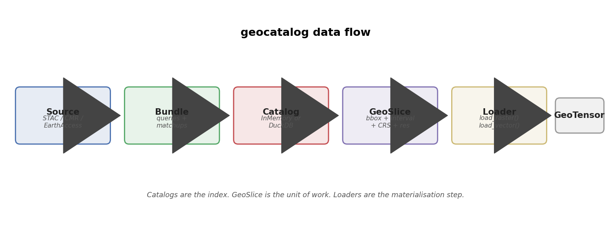
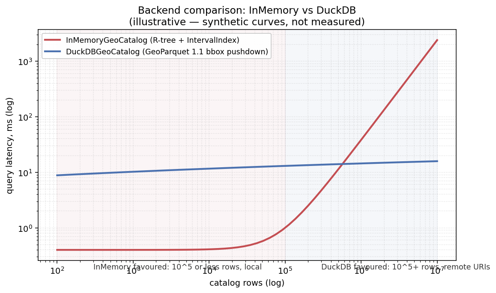
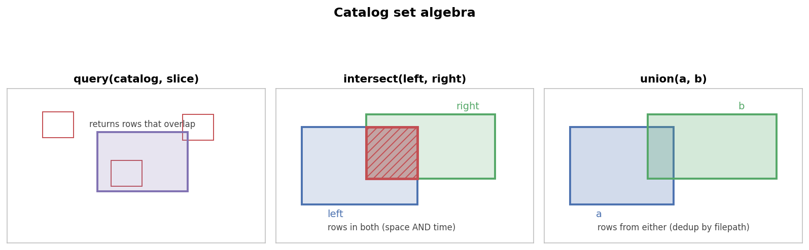

Concepts¶
This page is the conceptual reference: what a catalog is, how the pieces fit together, and when to reach for which backend. The Quickstart shows the same ideas on a real dataset; the API reference is the authoritative method list.
Architecture¶
flowchart LR
subgraph DISCOVERY[Discovery]
S1[STACSource]
S2[EarthAccessSource]
S3[CMRSource]
S4[local glob]
end
DISCOVERY --> B[CatalogBundle<br/><sub>items + queries +<br/>matchups</sub>]
DISCOVERY -.-> CAT
B --> CAT[GeoCatalog<br/><sub>Protocol</sub>]
CAT --> M[InMemoryGeoCatalog]
CAT --> D[DuckDBGeoCatalog]
M --> SLICE[GeoSlice<br/><sub>bbox + interval<br/>+ CRS + res</sub>]
D --> SLICE
SLICE --> L1[load_raster]
SLICE --> L2[load_xarray]
SLICE --> L3[load_vector]
L1 --> GT[(GeoTensor)]
L2 --> XR[(xr.Dataset)]
L3 --> GT
M -.->|to_geoparquet| GP[(GeoParquet 1.1<br/>local or s3://)]
GP -.->|open_catalog| D
style DISCOVERY fill:#f3f4f6,stroke:#888
style B fill:#e9f5ec,stroke:#55A868
style CAT fill:#fbe8e9,stroke:#C44E52
style SLICE fill:#efeaf6,stroke:#8172B2
style GP fill:#fff,stroke:#888,stroke-dasharray: 3 3The same flow as a static figure (rendered by
docs/assets/make_diagrams.py — re-run with
uv run --group docs python docs/assets/make_diagrams.py):

Three layers, in order¶
- Discovery —
Sourceadapters (STACSource,EarthAccessSource,CMRSource) yieldSourceRows. Local builders (build_raster_catalog,build_vector_catalog,build_xarray_catalog) read filenames + metadata directly. - Index — a
GeoCatalogProtocol implementation. Two backends ship:InMemoryGeoCatalog(eager, GeoDataFrame + R-tree) andDuckDBGeoCatalog(lazy, SQL over GeoParquet 1.1). The Protocol surface —query,intersect,union,iter_rows,iter_slices,to_geoparquet— is identical across both. - Materialise — loaders (
load_raster,load_raster_timeseries,load_xarray,load_vector) consume aGeoSliceplus a catalog and return aGeoTensor(orxr.Dataset).
GeoSlice — the unit of work¶
from geocatalog import GeoSlice
import pandas as pd
aoi = GeoSlice(
bounds=(-120.25, 38.85, -119.85, 39.30), # Lake Tahoe, lon/lat
interval=pd.Interval(
pd.Timestamp("2024-06-01"),
pd.Timestamp("2024-09-30"),
closed="both",
),
resolution=(0.0001, 0.0001), # ~10 m at this latitude
crs="EPSG:4326",
)
The dataclass is frozen=True. Slices can be cached, hashed, sent
across process boundaries, or persisted as JSON. To "change" a slice,
use dataclasses.replace(aoi, bounds=...). The explicit copy is
intentional — silent mutation of a query that's been logged is the
worst kind of bug.
Grid alignment¶
GeoSlice.shape rounds (xmax-xmin)/x_res to the nearest integer,
which silently accepts bounds that aren't a whole number of pixels.
That's fine for most pipelines but bites at the matchup boundary
(stacking a chip against a label raster a pixel short). Two opt-in
escape hatches:
aligned_shape()is the strict counterpart to.shape— same return type, but raisesValueErrorwith the residual when the extent isn't an integer multiple of the resolution.- The
align=constructor argument enables construction-time validation:"warn"emits aGridAlignmentWarning(via stdlibwarnings.warn, so it's visible regardless of loguru's library-quiet default),"error"raises,"snap"rounds outward while preserving the affine origin (xminandymaxfor north-up) —xmaxextends rightward,yminextends downward. Default is"off"(today's silent behaviour). Unknown modes are rejected at construction.
The align argument is not part of slice identity — two slices
with the same bounds, interval, resolution, and CRS compare equal
and hash equal regardless of mode.
For cross-source co-registration there's is_grid_aligned(a, b),
which returns True iff a and b share a pixel lattice (same
resolution + origins congruent mod resolution + same CRS). Pass
explain=True for per-axis residual diagnostics.
See docs/design/exact-grid-alignment.md for the full design.
Schema model¶
The shared row schema across backends:
| Column | Type | Meaning |
|---|---|---|
geometry |
Shapely Polygon | The file's footprint in the catalog's CRS |
start_time / end_time (promoted to IntervalIndex) |
Timestamp | Time interval, closed='both' |
filepath |
str | Path or URI to the source file |
crs |
str | The file's source CRS (may differ from catalog CRS) |
Extras depend on the backend:
- xarray adds
n_timesteps,time_var. - vector adds
layer. - STAC ingestion adds
asset_key,stac_item_id,stac_collection, plus anyextra_propertiesyou opt into. - Bundles add
id,source,collection,assets(JSON), andprovenance.
The IntervalIndex is the trick that makes temporal queries cheap.
Combined with the R-tree on geometry (InMemory) or the bbox-column
predicate pushdown (DuckDB), a query(slice) is two cheap index
lookups intersected.
Backends¶
Both implement the GeoCatalog Protocol. The Protocol is the
contract — anywhere you accept a GeoCatalog, either one works.
| InMemoryGeoCatalog | DuckDBGeoCatalog | |
|---|---|---|
| Install | base | pip install 'geocatalog[duckdb]' |
| Storage | gpd.GeoDataFrame in RAM |
GeoParquet 1.1 on disk / S3 / HF |
| Indexing | R-tree + IntervalIndex |
GeoParquet 1.1 covering bbox column |
| Scale | up to ~10⁵ rows | 10⁶+ rows |
| Remote URIs | only via fsspec read | native via DuckDB httpfs |
| Mutation | new instance per op | new instance per op (lazy SQL relation) |
| Build mode | eager | streaming (backend="duckdb", bounded RAM) |

The curves above are illustrative — synthetic, not measured. The shape is what matters: InMemory is unbeatable until the GeoDataFrame stops fitting in cache; DuckDB's bbox pushdown keeps remote-Parquet queries flat as row count grows.
When to pick which¶
- InMemory — interactive exploration, fixture catalogs, anything
under ~10⁵ rows. Construction is eager; the
gdfattribute exposes the underlying GeoDataFrame. - DuckDB — 10⁶+ rows, remote artifacts, or any flow where you want
to share a single GeoParquet file as the "source of truth." Build
with
backend="duckdb"to stream rows into Parquet in bounded memory; read withopen_catalog("cat.parquet")or directly withDuckDBGeoCatalog.open.
The factory¶
import geocatalog as gc
# Prefers DuckDB when [duckdb] is installed; falls back to InMemory.
catalog = gc.open_catalog("cat.parquet")
# Force one or the other:
catalog = gc.open_catalog("cat.parquet", engine="duckdb")
catalog = gc.open_catalog("cat.parquet", engine="memory")
# Remote — DuckDB reads only the row-groups your query touches.
catalog = gc.open_catalog("s3://my-bucket/cat.parquet")
Set algebra¶
query, intersect, union — all return new catalogs. The
originals are untouched, which makes them safe to compose and cache.

import geocatalog as gc
imagery = gc.build_raster_catalog(...)
labels = gc.build_vector_catalog(...)
# Rows from imagery whose footprint AND time interval overlap labels.
paired = gc.intersect(imagery, labels)
# Rows from imagery covering 2023 OR 2024.
combined = gc.union(catalog_2023, catalog_2024)
# Just the imagery rows that touch this slice.
hits = imagery.query(aoi)
intersect(left, right, spatial_only=True) is the right tool for
pairing imagery with static labels (no temporal overlap by
construction).
Persistence¶
GeoParquet roundtrip¶
gc.to_geoparquet(catalog, "cat.parquet")
# ... share the file ...
catalog = gc.from_geoparquet("cat.parquet")
The artifact is GeoParquet 1.1, with a per-row covering bbox
struct — readable by DuckDB, geopandas, GDAL, pandas, and any other
GeoParquet-aware tool. DuckDBGeoCatalog uses the same file directly.
Hive partitioning + append¶
For archives that grow over time, write to a directory of Hive-partitioned shards and append new rows incrementally:
from geocatalog import append_files
catalog = append_files(
archive="s3://my-bucket/s2_archive/",
filepaths=new_scene_paths,
extract_fn=extract_raster_row, # picklable
crs="EPSG:4326",
backend="raster",
partition_by=("year", "month"), # derived from start_time
)
Only new rows are written; existing shards are untouched. Mismatched
partition_by against an existing archive raises ValueError rather
than silently producing a mixed layout.
Streaming build (backend="duckdb")¶
Default builders collect every row in RAM. Beyond ~10⁵ files the build itself becomes the bottleneck. Switch to streaming:
catalog = gc.build_raster_catalog(
filepaths, # 10^6 Sentinel-2 scenes
filename_regex=r"S2_T\w+_(?P<date>\d{8}).*\.tif",
backend="duckdb",
out_path="s2_archive.parquet", # required when backend="duckdb"
n_workers=8, # parallel rasterio.open
sort_by=("start_time", "geometry_hilbert"), # row-group pruning
)
Peak RAM is batch_size * row_size (default ~10 MB at
batch_size=10_000), not O(n_rows). The resulting GeoParquet has a
per-row bbox column and Hilbert-sorted geometries — set up for
efficient predicate pushdown at query time.
Bridging to a patcher¶
CatalogDomain wraps a catalog so a tiling patcher can walk it:
import geocatalog as gc
catalog = gc.build_raster_catalog(...)
domain = gc.CatalogDomain(catalog=catalog, resolution=(10.0, 10.0))
for slice_ in domain.slices():
chip = gc.load_raster(catalog, slice_, band_indexes=[2, 3, 4, 8])
yield model(chip.values)
The canonical consumer is
geotoolz.patch.SpatialPatcher,
but any code that iterates domain.slices() works.
With the [patch] extra installed, geocatalog.staging.field_for
hands a catalog directly to geopatcher.SpatialPatcher as a
RasterField — no manual construction. See the
end-to-end notebook for a
worked example.
Provenance: Source → Bundle → Catalog¶
Source adapters (STACSource, EarthAccessSource, CMRSource)
yield SourceRows — pre-catalog records that carry the query
parameters that produced them. CatalogBundle collects those rows,
along with the queries and any matchup records, into a single
durable directory. bundle.catalog is the InMemoryGeoCatalog you
work with day-to-day; bundle.to_directory("./my_catalog") persists
the full provenance trail.
See recipes/staging-and-bundles.md for the workflow.
See also¶
- Quickstart — same concepts on real Sentinel-2 over Lake Tahoe.
- API reference — full method signatures.
- Schema versions — GeoParquet schema migration.
- Logging —
loguru.enable("geocatalog")to see what the catalog is doing under the hood.